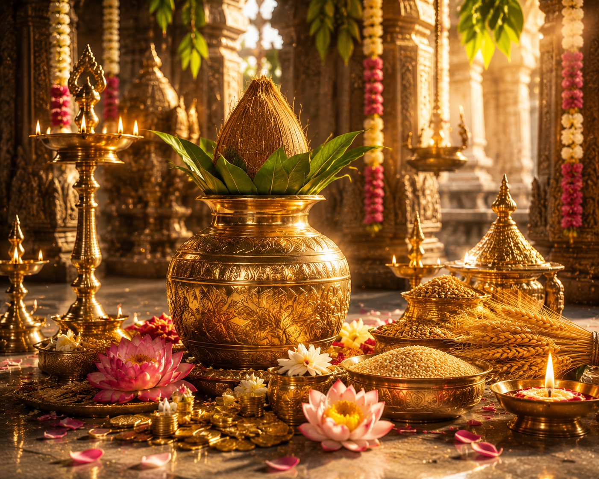

వసంత పంచమి హిందూ ధర్మంలో వసంత ఋతువు ఆగమనాన్ని సూచించే పవిత్ర పర్వదినం. మాఘ శుద్ధ పంచమి రోజున జరుపుకునే ఈ పండుగ జ్ఞానానికి, విద్యకు, కళలకు మరియు ప్రకృతి పునరుజ్జీవనానికి ప్రతీకగా భావించబడుతుంది. ఈ రోజున విద్యాదేవత అయిన శ్రీ సరస్వతీ దేవిని ప్రత్యేకంగా ఆరాధిస్తారు.
భారతదేశంలోని అనేక ప్రాంతాలలో విద్యార్థులు, కళాకారులు, సంగీత విద్వాంసులు, రచయితలు మరియు ఉపాధ్యాయులు ఈ రోజున సరస్వతీ దేవిని పూజించి విద్యా, జ్ఞాన, కళా సంపదలను ప్రసాదించమని ప్రార్థిస్తారు.
వసంత పంచమి
భారతీయ మరియు తెలుగు సంప్రదాయ పర్వదినం

౧. పరిచయం
౨. పండుగ ప్రాముఖ్యత
వసంత పంచమి జ్ఞానం అజ్ఞానంపై సాధించే విజయానికి ప్రతీక. విద్య, సంగీతం, సాహిత్యం, కళలు మరియు సంస్కృతికి ఈ పండుగ ప్రత్యేక ప్రాధాన్యం కలిగి ఉంది.
ప్రకృతిలో వసంత ఋతువు ప్రారంభమై చెట్లు కొత్త చిగుళ్లు తొడిగి, పుష్పాలు వికసించి, పంటపొలాలు పచ్చదనంతో కళకళలాడే సమయాన్ని ఈ పర్వదినం సూచిస్తుంది. అందువల్ల దీనిని ప్రకృతి పునర్జన్మకు సంకేతంగా కూడా భావిస్తారు.
ప్రకృతిలో వసంత ఋతువు ప్రారంభమై చెట్లు కొత్త చిగుళ్లు తొడిగి, పుష్పాలు వికసించి, పంటపొలాలు పచ్చదనంతో కళకళలాడే సమయాన్ని ఈ పర్వదినం సూచిస్తుంది. అందువల్ల దీనిని ప్రకృతి పునర్జన్మకు సంకేతంగా కూడా భావిస్తారు.
౩. వసంత పంచమి – పురాణ నేపథ్యం
పురాణాల ప్రకారం, సృష్టి ప్రారంభమైన తరువాత జగత్తులో నిశ్శబ్దం నెలకొనగా, బ్రహ్మదేవుడు తన కమండలంలోని పవిత్ర జలాన్ని చల్లి, వీణను ధరించి, తెల్లని వస్త్రాలు ధరించిన దివ్య స్వరూపిణి శ్రీ సరస్వతీ దేవిని అవిర్భవింపజేశాడని చెబుతారు.
సరస్వతీ దేవి వీణానాదంతో ప్రపంచానికి వాక్కు, సంగీతం, జ్ఞానం మరియు కళలను ప్రసాదించింది. అప్పటి నుండి ఆమెను విద్యకు అధిష్ఠాన దేవతగా ఆరాధిస్తున్నారు.
మరొక సంప్రదాయం ప్రకారం, వసంత ఋతువును ఆహ్వానించే మొదటి ప్రధాన పర్వదినం కావడంతో దీనికి "వసంత పంచమి" అనే పేరు వచ్చింది.
సరస్వతీ దేవి వీణానాదంతో ప్రపంచానికి వాక్కు, సంగీతం, జ్ఞానం మరియు కళలను ప్రసాదించింది. అప్పటి నుండి ఆమెను విద్యకు అధిష్ఠాన దేవతగా ఆరాధిస్తున్నారు.
మరొక సంప్రదాయం ప్రకారం, వసంత ఋతువును ఆహ్వానించే మొదటి ప్రధాన పర్వదినం కావడంతో దీనికి "వసంత పంచమి" అనే పేరు వచ్చింది.
౪. చరిత్ర
వసంత పంచమిని భారతదేశంలో అనాదికాలం నుండి జరుపుకుంటున్నారు. వేదాలు, పురాణాలు మరియు సాంప్రదాయ గ్రంథాలలో సరస్వతీ ఆరాధనకు విశిష్ట స్థానం కల్పించబడింది.
ప్రాచీన గురుకులాలలో ఈ రోజున విద్యారంభం చేయించడం, గ్రంథపూజ నిర్వహించడం మరియు శాస్త్రాధ్యయనం ప్రారంభించడం ఆనవాయితీగా ఉండేది. నేటికీ అనేక విద్యాసంస్థలు ఈ సంప్రదాయాన్ని కొనసాగిస్తున్నాయి.
ప్రాచీన గురుకులాలలో ఈ రోజున విద్యారంభం చేయించడం, గ్రంథపూజ నిర్వహించడం మరియు శాస్త్రాధ్యయనం ప్రారంభించడం ఆనవాయితీగా ఉండేది. నేటికీ అనేక విద్యాసంస్థలు ఈ సంప్రదాయాన్ని కొనసాగిస్తున్నాయి.
౫. వసంత పంచమి ఎలా జరుపుకుంటారు
ఈ రోజున భక్తులు పవిత్ర స్నానం చేసి సరస్వతీ దేవిని పూజిస్తారు. పుస్తకాలు, వాద్యపరికరాలు, కలాలు మరియు విద్యకు సంబంధించిన వస్తువులను దేవి సమక్షంలో ఉంచి ప్రత్యేక పూజలు నిర్వహిస్తారు.
విద్యార్థులు తమ విద్యాభ్యాసంలో విజయాన్ని ప్రసాదించమని ప్రార్థిస్తారు. సంగీత, నృత్య మరియు సాహిత్య కార్యక్రమాలు కూడా అనేక ప్రాంతాలలో నిర్వహించబడతాయి.
విద్యార్థులు తమ విద్యాభ్యాసంలో విజయాన్ని ప్రసాదించమని ప్రార్థిస్తారు. సంగీత, నృత్య మరియు సాహిత్య కార్యక్రమాలు కూడా అనేక ప్రాంతాలలో నిర్వహించబడతాయి.
౬. వసంత పంచమి రోజున నిర్వహించే ప్రధాన ఆచారాలు
పవిత్ర స్నానం
శ్రీ సరస్వతీ దేవి పూజ
పుస్తక పూజ
వాద్యపరికరాల పూజ
విద్యారంభం
సరస్వతీ స్తోత్ర పారాయణం
సంగీత, సాహిత్య కార్యక్రమాలు
దానధర్మాలు
గురువులకు నమస్కారం
శ్రీ సరస్వతీ దేవి పూజ
పుస్తక పూజ
వాద్యపరికరాల పూజ
విద్యారంభం
సరస్వతీ స్తోత్ర పారాయణం
సంగీత, సాహిత్య కార్యక్రమాలు
దానధర్మాలు
గురువులకు నమస్కారం
౭. ప్రధానంగా ఎక్కడ జరుపుకుంటారు
బాసర శ్రీ జ్ఞాన సరస్వతీ దేవాలయం (తెలంగాణ)
వర్గల్ శ్రీ విద్యా సరస్వతీ దేవాలయం (తెలంగాణ)
కూతనూర్ సరస్వతీ దేవాలయం (తమిళనాడు)
పుష్కర్ బ్రహ్మ దేవాలయ పరిసరాలు (రాజస్థాన్)
భారతదేశంలోని విద్యాసంస్థలు మరియు సరస్వతీ దేవాలయాలు
వర్గల్ శ్రీ విద్యా సరస్వతీ దేవాలయం (తెలంగాణ)
కూతనూర్ సరస్వతీ దేవాలయం (తమిళనాడు)
పుష్కర్ బ్రహ్మ దేవాలయ పరిసరాలు (రాజస్థాన్)
భారతదేశంలోని విద్యాసంస్థలు మరియు సరస్వతీ దేవాలయాలు
౮. ఆధ్యాత్మిక సందేశం
విద్య అనేది మనిషి జీవితాన్ని ప్రకాశవంతం చేసే దివ్యశక్తి. జ్ఞానం వినయాన్ని, వివేకాన్ని మరియు ధర్మాన్ని పెంపొందిస్తుంది.
వసంత పంచమి మనకు విద్యను కేవలం ఉపాధి కోసం కాకుండా, వ్యక్తిత్వ వికాసం మరియు సమాజ శ్రేయస్సు కోసం ఉపయోగించాలనే సందేశాన్ని అందిస్తుంది. నిజమైన జ్ఞానం మనిషిని వినయవంతునిగా మారుస్తుందని ఈ పర్వదినం బోధిస్తుంది.
వసంత పంచమి మనకు విద్యను కేవలం ఉపాధి కోసం కాకుండా, వ్యక్తిత్వ వికాసం మరియు సమాజ శ్రేయస్సు కోసం ఉపయోగించాలనే సందేశాన్ని అందిస్తుంది. నిజమైన జ్ఞానం మనిషిని వినయవంతునిగా మారుస్తుందని ఈ పర్వదినం బోధిస్తుంది.
౯. ఆసక్తికర విషయాలు
వసంత పంచమి రోజునే అనేక ప్రాంతాలలో విద్యారంభం చేయించడం సంప్రదాయం.
శ్రీ సరస్వతీ దేవిని విద్య, సంగీతం, సాహిత్యం మరియు కళల అధిష్ఠాన దేవతగా భావిస్తారు.
ఈ రోజున పుస్తకాలు మరియు వాద్యపరికరాలకు ప్రత్యేక పూజలు నిర్వహిస్తారు.
వసంత ఋతువు ప్రారంభాన్ని సూచించే ప్రధాన భారతీయ పర్వదినాలలో ఇది ఒకటి.
బాసర జ్ఞాన సరస్వతీ దేవాలయం దక్షిణ భారతదేశంలో అత్యంత ప్రసిద్ధ సరస్వతీ క్షేత్రాలలో ఒకటి.
చిన్న పిల్లలకు అక్షరాభ్యాసం చేయించడానికి ఈ రోజు అత్యంత శుభప్రదమైనదిగా భావించబడుతుంది.
శ్రీ సరస్వతీ దేవిని విద్య, సంగీతం, సాహిత్యం మరియు కళల అధిష్ఠాన దేవతగా భావిస్తారు.
ఈ రోజున పుస్తకాలు మరియు వాద్యపరికరాలకు ప్రత్యేక పూజలు నిర్వహిస్తారు.
వసంత ఋతువు ప్రారంభాన్ని సూచించే ప్రధాన భారతీయ పర్వదినాలలో ఇది ఒకటి.
బాసర జ్ఞాన సరస్వతీ దేవాలయం దక్షిణ భారతదేశంలో అత్యంత ప్రసిద్ధ సరస్వతీ క్షేత్రాలలో ఒకటి.
చిన్న పిల్లలకు అక్షరాభ్యాసం చేయించడానికి ఈ రోజు అత్యంత శుభప్రదమైనదిగా భావించబడుతుంది.
౧౦. వసంత పంచమి రోజున చేయవలసిన ముఖ్యమైనవి
పవిత్ర స్నానం చేయాలి.
శ్రీ సరస్వతీ దేవిని పూజించాలి.
పుస్తకాలు మరియు విద్యాసామగ్రికి పూజ చేయాలి.
సరస్వతీ స్తోత్రం లేదా సరస్వతీ అష్టోత్తరం పారాయణం చేయాలి.
గురువులకు నమస్కరించి ఆశీర్వాదం తీసుకోవాలి.
చిన్నారులకు అక్షరాభ్యాసం చేయించాలి.
విద్యాదానం లేదా పుస్తకదానం చేయాలి.
శ్రీ సరస్వతీ దేవిని పూజించాలి.
పుస్తకాలు మరియు విద్యాసామగ్రికి పూజ చేయాలి.
సరస్వతీ స్తోత్రం లేదా సరస్వతీ అష్టోత్తరం పారాయణం చేయాలి.
గురువులకు నమస్కరించి ఆశీర్వాదం తీసుకోవాలి.
చిన్నారులకు అక్షరాభ్యాసం చేయించాలి.
విద్యాదానం లేదా పుస్తకదానం చేయాలి.
౧౧. ఆధారాలు
స్కాంద పురాణం
దేవీ భాగవతం
బ్రహ్మ వైవర్త పురాణం
పద్మ పురాణం
ఇతర ఆధారాలు
ప్రముఖ సరస్వతీ దేవాలయాల ప్రచురణలు
భారతీయ విద్యా సంప్రదాయ గ్రంథాలు
సనాతన ధర్మ సాహిత్యం
దేవీ భాగవతం
బ్రహ్మ వైవర్త పురాణం
పద్మ పురాణం
ఇతర ఆధారాలు
ప్రముఖ సరస్వతీ దేవాలయాల ప్రచురణలు
భారతీయ విద్యా సంప్రదాయ గ్రంథాలు
సనాతన ధర్మ సాహిత్యం
౧౨. ముగింపు
వసంత పంచమి కేవలం వసంత ఋతువు ఆరంభాన్ని సూచించే పండుగ మాత్రమే కాదు; జ్ఞానం, విద్య, కళలు మరియు సంస్కృతికి అంకితమైన మహత్తర పర్వదినం.
శ్రీ సరస్వతీ దేవి అనుగ్రహంతో ప్రతి మనిషి జీవితంలో జ్ఞానం, వివేకం, వినయం మరియు సద్గుణాలు వికసించాలని ఈ పర్వదినం మనకు స్ఫూర్తినిస్తుంది.
"జ్ఞానమే నిజమైన సంపద. సరస్వతీ దేవి అనుగ్రహంతో ప్రతి హృదయంలో విద్యా వెలుగు నిత్యం ప్రకాశించాలని కోరుకుందాం."
శ్రీ సరస్వతీ దేవి అనుగ్రహంతో ప్రతి మనిషి జీవితంలో జ్ఞానం, వివేకం, వినయం మరియు సద్గుణాలు వికసించాలని ఈ పర్వదినం మనకు స్ఫూర్తినిస్తుంది.
"జ్ఞానమే నిజమైన సంపద. సరస్వతీ దేవి అనుగ్రహంతో ప్రతి హృదయంలో విద్యా వెలుగు నిత్యం ప్రకాశించాలని కోరుకుందాం."
✦ సర్వే జనాః సుఖినో భవంతు ✦